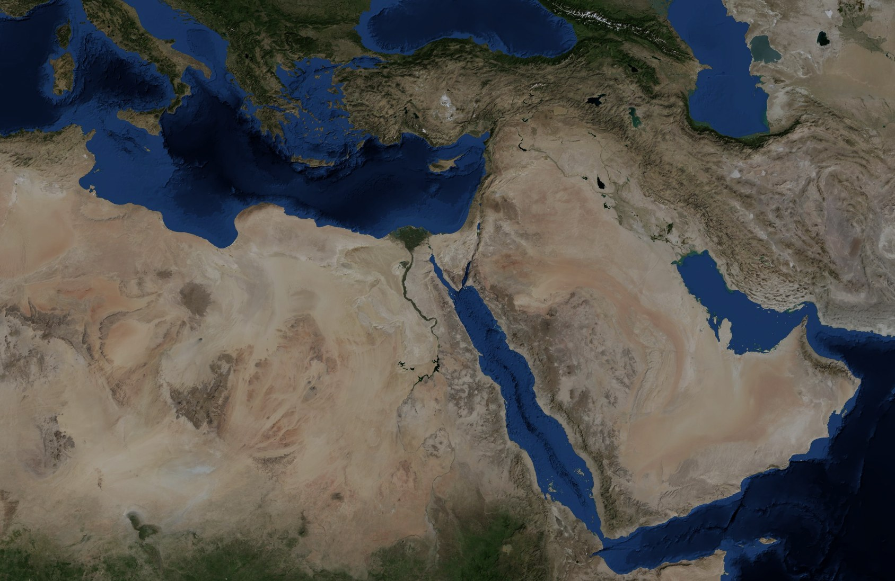
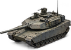
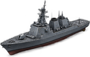
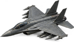

مصر
ليبيا
السودان
السعودية
تركيا
إيران
العراق
سوريا
الأردن
تونس
الجزائر
اليمن
عمان
الإمارات
تشاد
النيجر
إريتريا
اليونان
إيطاليا
الكويت
قطر
القاهرة
الإسكندرية
أسوان
طرابلس
بنغازي
الخرطوم
الرياض
بغداد
صنعاء
أنقرة
طهران
1
سيوة
4

4
6
7
6
10

24

مصر
حسني مبارك
جمهورية رئاسية
الخزينة
36.0
مليار $
الاستقرار
58%
الشرعية
44
القوة البشرية
2.4
مليون
النفوذ
62
البحث
+18
/ شهر
السبت
1 يناير 2011
1×
إيقاف
1×
2×
5×
10×
أقصى
احتجاجات واسعة في تونس
3
الخريطة:
عسكرية
دولتي
الدولة
الاقتصاد
الداخلية والسياسة
الجيش
الخارجية
الاستخبارات
البحث
المزيد
تقدّم
هجوم
توقّف
نقطة عبور
إغلاق
لا حرب: يُفتح الهجوم عند إعلان الحرب